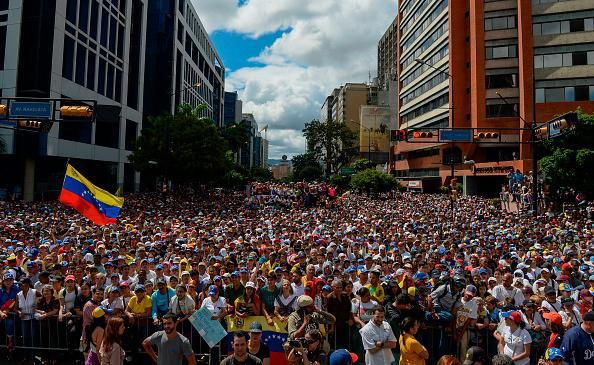

Venezuela
This website is dedicated to spreading awareness about
Venezuela and the current hardships that the country is facing
today. We encourage readers to explore the website and learn
more about current events in Venezuela and how one can take
action.
Spotlight
Gallery
The gallery section includes a number of photos documenting
the everyday struggles of Venezuelans. Click here
for more information.
Stories
The stories section includes a number of first-person accounts of the
the everyday struggles of Venezuelans. Click here
for more information.
Research
The research section includes of reports that document the
difficulties of living in present-day Venezuela. Click
here for more information.
Donate
The donate section includes of organizations and institutions
you can donate to in order to help Venezuelans in need.
Click here for more information.